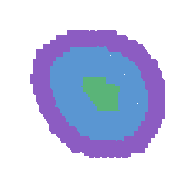
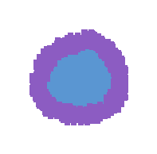
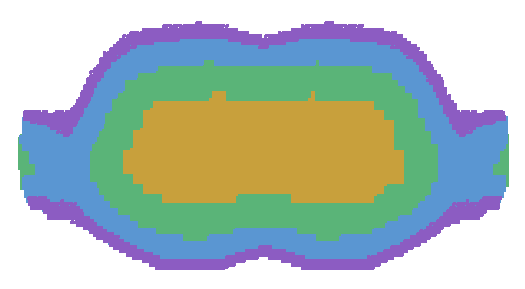
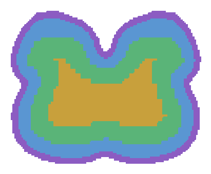
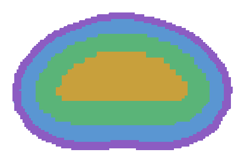
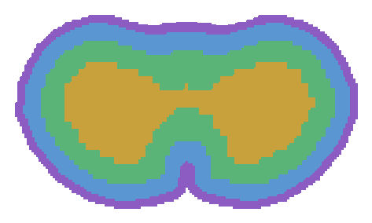
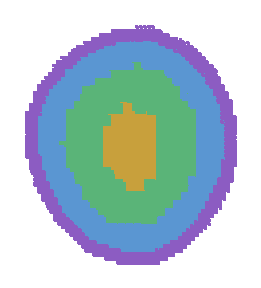
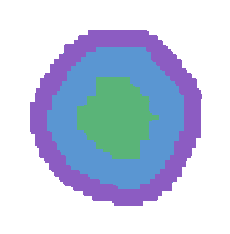

Parâmetros do tecido, região por região
O que cada número configura no tecido de tetraedros (passos 11 e 12 da investigação pose-capture), com os valores em uso, de onde vieram e o que se vê ao mudá-los. Os desenhos e os números medidos são da malha malha_v10_repouso_para_desenho, montada em repouso (braços abertos) para os cortes ficarem legíveis, com as mesmas regras da malha da dança.
Onde mudar
- Arquivo:
human-model/investigations/pose-capture/tissue_groups.json. Cada região é um bloco em"groups", e a anatomia reduzida fica em"anatomy". - Numa rodada só, sem editar o arquivo:
seio_E.fat_young=2000,coxa.damping=10e assim por diante, no fim do comando dotissue_mesh.py. - Densidade neutra (o que você perguntou):
"densidade_neutra": 1000no arquivo, oudensidade_neutra=1000no comando, dá a mesma densidade a todo o tecido mole e ignora as densidades por região. Comnull, valem as das regiões. - Material e anatomia entram na construção da malha (
tissue_mesh.py, uns 3 minutos). A simulação (tissue_sim.py, uns 1,5 minuto) lê o que a malha gravou.
Onde fica cada região
Cada cor é um bloco do tissue_groups.json: tudo o que está nessa cor usa os valores daquele bloco. Os seios e a cavidade ficam por dentro, por isso não aparecem na pele. A pele que cobre os seios é do tronco.
Estes desenhos revelaram dois erros, já corrigidos: a pele dos joelhos caía no grupo do bumbum, porque o MPFB tem ossos auxiliares no joelho que eu não reconhecia, e quase toda a nádega estava no grupo da coxa, porque o MPFB dá o peso dela ao osso da coxa. Agora a pele atrás da articulação do quadril, até 12 cm abaixo dela (a dobra do glúteo, a olho), é bumbum. As versões erradas ficaram guardadas como 13_parametros_imagens_ERRADO_*.
Por dentro: um corte de frente, no meio do corpo
O mesmo corte de três formas: por região, por tecido (que parâmetro vale em cada camada) e pelo tamanho dos tetraedros. O cinza é rígido: segue o osso e não usa nenhum parâmetro de tecido.
- pele: skin_young, fat_density
- rígido: segue o osso
- seio: grupo seio_E / seio_D
- cavidade: material próprio
- músculo: muscle_young, muscle_density
- gordura: fat_young, fat_density
Como ler as cores de tecido
- pele, a primeira camada de 3 mm:
skin_youngefat_densityda região. - gordura, até a espessura da tabela de gordura:
fat_youngefat_density. - músculo, o resto até o osso:
muscle_youngemuscle_density. - seio: os blocos
seio_Eeseio_D(fat_young,fat_density). - cavidade: o bloco
cavidade. - rígido: osso, caixa torácica, pelve e ombros. Segue o esqueleto.
- Em todas as camadas moles:
poissonedampingda região.
No corte por tamanho: 3 mm 6 mm 9 mm 12 mm.
Os sete parâmetros de cada região
| Parâmetro | Chave | O que configura | Maior | Menor | Faixa razoável |
|---|---|---|---|---|---|
| Elasticidade da gordura | fat_young (Pa) | Quanto a gordura resiste a mudar de forma | Cai menos, balança mais rápido e menos longe | Cai mais, balança devagar e longe; abaixo de ~1.000 escorre | 1.000–10.000 |
| Elasticidade do músculo | muscle_young (Pa) | O músculo relaxado sob a gordura | A região fica firme, só a gordura balança | Tudo balança junto, como carne mole | 10.000–50.000 |
| Elasticidade da pele | skin_young (Pa) | A primeira camada de 3 mm, que segura o resto | Contém a gordura: menos queda e menos balanço, mais vinco nas dobras | A gordura empurra a pele para fora e cai mais | 50.000–300.000 |
| Densidade da gordura | fat_density (kg/m³) | Peso da gordura e da pele | Mais peso: cai mais e atrasa mais em relação ao osso | Mais leve: acompanha o osso | 750–950 |
| Densidade do músculo | muscle_density (kg/m³) | Peso do músculo | Idem, mais fundo | Idem | 900–1.060 |
| Volume (Poisson) | poisson | Quanto o tecido resiste a mudar de volume | Perto de 0,5: apertado, estufa para os lados | Apertado, só afunda | 0,40–0,49 |
| Amortecimento | damping (1/s) | Quanto do balanço morre por segundo, sempre em relação ao osso em que o tecido se apoia (não freia o membro inteiro, como o ar faria) | Um tranco e para | Balança várias vezes depois de cada movimento | 5–60 |
Em cada região, a pele e a gordura usam fat_density, e o músculo usa muscle_density. As peças rígidas não usam nenhum desses: seguem o osso.
Por região
Em cada carta, um corte atravessado da região, com cada camada apontada e os parâmetros que valem nela, e ao lado o mesmo corte pelo tamanho dos tetraedros.
Braço braco (E e D juntos)
Do ombro ao cotovelo. A pele a até 7 cm do eixo do braço, além da articulação do ombro, é braço; o resto da lateral do peito é tronco.
- gordura: fat_young, fat_density
- pele: skin_young, fat_density
- músculo: muscle_young, muscle_density
- rígido: segue o osso

o mesmo corte pelo tamanho dos tetraedros: roxo 3 mm, azul 6, verde 9, amarelo 122,9 L: pele 0,35, gordura 0,90, músculo 1,61 · 2,4 kg medido
| Gordura (mulher / homem) | frente 8 / 5 mm, trás 15 / 8 mm a olho |
| Por dentro | úmero: cápsula rígida de 11 mm de raio no osso do braço a olho |
| Valores | gordura 4.000 · músculo 15.000 · pele 100.000 Pa · 750 / 900 kg/m³ · 0,45 · 20/s rafa8 |
- Ao mexer: a parte de trás, mais gorda, é a que balança. Para um "tchauzinho" mais solto, baixe
fat_youngedamping.
Antebraço antebraco
Do cotovelo ao pulso. A pele que o MPFB move mais pelo antebraço ou pela mão.
- pele: skin_young, fat_density
- gordura: fat_young, fat_density
- músculo: muscle_young, muscle_density
- rígido: segue o osso

o mesmo corte pelo tamanho dos tetraedros: roxo 3 mm, azul 6, verde 9, amarelo 121,1 L: pele 0,24, gordura 0,27, músculo 0,60 · 0,9 kg medido
| Gordura | 6 / 4 mm a olho |
| Por dentro | rádio e ulna: uma cápsula de 9 mm a olho |
| Valores | como o braço rafa8 |
- Ao mexer: quase nada balança aqui, o que é o real. Mudar os valores daqui faz pouca diferença.
- No pulso, a pele simulada encontra a da mão, que segue o esqueleto. Há uma emenda ali. Medido em 15/11: a borda simulada fica a no máximo 1,4 mm da mão; a linha que aparecia era da montagem (a mão sem subdivisão, por baixo da pele lisa), corrigida no tet_v11.
Tronco tronco
Peito, costas, ombros, pescoço e a pele que cobre os seios (os volumes dos seios são grupos à parte).
- pele: skin_young, fat_density
- seio: grupo seio_E / seio_D
- rígido: segue o osso
- músculo: muscle_young, muscle_density
- gordura: fat_young, fat_density

o mesmo corte pelo tamanho dos tetraedros: roxo 3 mm, azul 6, verde 9, amarelo 1211,3 L: pele 1,23, gordura 3,44, músculo 6,62 · 9,5 kg medido
| Gordura | peito 10 / 8, costas em cima 12 / 10, embaixo 18 / 14, flancos 22 / 20, pescoço 8 / 8 mm a olho |
| Por dentro | caixa torácica rígida, uma peça só no spine.003, a partir de 15 mm abaixo da gordura (o "peitoral"); coluna (cápsula de 20 mm); ombros (cápsula de 20 mm no lugar de clavícula e escápula) a olho |
| Valores | como o braço rafa8 |
- Atenção: a pele e a gordura fina por cima dos seios são deste grupo. Para soltar o seio, mude também
tronco.skin_young, ou crie um grupo para a pele do seio. - É onde se concentram os vincos (veja abaixo).
Seios seio_E e seio_D
Cada um é o volume entre a pele de verdade e a do mesmo corpo com o tamanho de seio do MPFB no mínimo e os controles de seio desligados, menos 5 mm de gordura sob a pele.
- pele: skin_young, fat_density
- seio: grupo seio_E / seio_D
- rígido: segue o osso
- gordura: fat_young, fat_density
- músculo: muscle_young, muscle_density

o mesmo corte pelo tamanho dos tetraedros: roxo 3 mm, azul 6, verde 9, amarelo 121,12 L e 1,11 L · 1,0 kg cada medido
| Por dentro | nada rígido. A base encosta no peitoral e na caixa torácica; a pele e a gordura fina por cima são do tronco |
| Valores | gordura 2.000 Pa · 900 kg/m³ · 0,45 · 10/s a olho (mais mole e menos amortecido que o resto; seus valores do "simulador do seio", de 05/11, ainda não foram trazidos) |
- Medido: com o peso, o seio cai uns 25 mm a partir do formato do MPFB, e na dança balança até uns 50 mm.
- Ao mexer:
fat_youngcontrola quanto cai e o ritmo,dampingquantas vezes balança,fat_densityo atraso. E e D podem ser diferentes. - O formato do MPFB já é o seio em pé, com o peso. A simulação aplica a gravidade outra vez por cima, e por isso ele cai além do que deveria. Falta calcular uma forma de repouso compensada.
Barriga barriga
A frente do abdome, entre o quadril e as costelas, e os flancos de baixo.
- cavidade: material próprio
- gordura: fat_young, fat_density
- rígido: segue o osso
- músculo: muscle_young, muscle_density
- pele: skin_young, fat_density

o mesmo corte pelo tamanho dos tetraedros: roxo 3 mm, azul 6, verde 9, amarelo 125,7 L: pele 0,38, gordura 2,51, músculo 2,78 · 4,7 kg medido
| Gordura | 25 / 25 mm, flancos 22 / 20 mm a olho |
| Por dentro | parede do abdome (músculo de 15 mm) sobre a cavidade dos órgãos a olho |
| Valores | como o braço rafa8 |
- Ao mexer: a barriga balança como um saco d'água porque a cavidade empurra a parede. A gordura daqui e a cavidade se somam. Num homem com barriga, como a sua, este grupo e a cavidade são os que mais contam.
Cavidade cavidade
Os órgãos da barriga: abaixo da parede do abdome, entre o quadril e as costelas, na frente da coluna.
- cavidade: material próprio
- gordura: fat_young, fat_density
- rígido: segue o osso
- músculo: muscle_young, muscle_density
- pele: skin_young, fat_density
2,45 L · 2,45 kg medido
| Valores | um material só: 3.000 Pa, 1.000 kg/m³, 0,45, 20/s a olho. Aqui fat_young, muscle_young e skin_young são o mesmo número. |
- Ao mexer: o volume (
poisson) é o que mais importa: perto de 0,49 a barriga só muda de forma, sem encolher, como um balão d'água. - Fica no fundo, então tem tetraedros grandes (só 12.700): é um bloco mole, sem detalhe.
Bumbum bumbum
A nádega: atrás da articulação do quadril, até 12 cm abaixo dela (a dobra do glúteo), e os lados do quadril até uns 6 cm acima da articulação.
- pele: skin_young, fat_density
- músculo: muscle_young, muscle_density
- rígido: segue o osso
- gordura: fat_young, fat_density

o mesmo corte pelo tamanho dos tetraedros: roxo 3 mm, azul 6, verde 9, amarelo 125,5 L: pele 0,37, gordura 2,68, músculo 2,41 · 4,5 kg medido
| Gordura | nádegas 30 / 18, quadril 30 / 14 mm a olho |
| Por dentro | pelve: um bloco rígido no osso "spine" (a raiz), a partir de 25 mm abaixo da gordura, de 5 cm abaixo a 8 cm acima da articulação da coxa a olho |
| Valores | como o braço rafa8 |
- Ao mexer: é onde o rebolado da dança aparece como tecido. Mais mole e menos amortecido, a nádega sacode mais atrasada em relação à pelve.
Coxa coxa (E e D)
Da virilha ao joelho.
- gordura: fat_young, fat_density
- pele: skin_young, fat_density
- rígido: segue o osso
- músculo: muscle_young, muscle_density

o mesmo corte pelo tamanho dos tetraedros: roxo 3 mm, azul 6, verde 9, amarelo 1210,8 L: pele 0,82, gordura 4,39, músculo 5,62 · 9,0 kg medido
| Gordura | frente 15 / 8, trás 25 / 12, dentro 25 / 12, fora 22 / 10 mm a olho |
| Por dentro | fêmur: cápsula de 14 mm a olho |
| Valores | como o braço rafa8, os únicos medidos (na coxa, 07/11) |
- Ao mexer: a parte de trás e a de dentro tremem a cada passo. Com rafa8, a coxa sozinha balançou 15,5 mm por passo.
Perna perna (E e D)
Do joelho ao tornozelo.
- pele: skin_young, fat_density
- músculo: muscle_young, muscle_density
- gordura: fat_young, fat_density
- rígido: segue o osso

o mesmo corte pelo tamanho dos tetraedros: roxo 3 mm, azul 6, verde 9, amarelo 124,5 L: pele 0,63, gordura 1,37, músculo 2,54 · 3,8 kg medido
| Gordura | joelho 12 / 8, frente 5 / 4, panturrilha 12 / 7 mm a olho |
| Por dentro | tíbia: cápsula de 12 mm a olho |
| Valores | como o braço rafa8 |
- Ao mexer: só a panturrilha treme, curto, quando o pé bate. No tornozelo há uma emenda com o pé, que segue o esqueleto.
O que não é por região
| Parâmetro | Onde | Valor | O que faz |
|---|---|---|---|
| Camadas da malha | mesh.bands_mm | 3×3, 3×6, 3×9 mm, depois 12 | Tamanho dos tetraedros por profundidade sob a pele Rafael |
| Espessura da pele | mesh.skin_mm | 3 mm | A primeira camada, com skin_young |
| Peitoral, parede do abdome | anatomy.pectoral_m, abdominal_wall_m | 15 mm, 15 mm | O músculo entre a gordura e a caixa torácica / a cavidade |
| Raios das cápsulas rígidas | anatomy.bone_radius_m | braço 11, antebraço 9, coxa 14, perna 12, coluna 20, ombro 20 mm | A parte que segue o osso sem ceder |
| Gordura sob a pele do seio | anatomy.breast_skin_fat_m | 5 mm | Entre a pele e o volume do seio |
| Passos por quadro | substeps= no tissue_sim.py | 160 | Precisão. Medido: 160, 320 e 640 dão o mesmo resultado |
| Assentar antes da dança | hold= | 15 quadros (0,5 s) | O tecido assenta com o peso antes da dança começar |
| Colagem entre camadas | GLUE_COMPLIANCE em tissue_solver.py | 1e-8 m/N | Uma folga mínima. Com zero, a simulação explodia |
| Densidade neutra | densidade_neutra | desligada | Uma só densidade para todo o tecido mole |
| Quanto a pele cede no contato | cede_mm= | 5 mm | Entre partes (tronco, braços, pernas). Além disso, a sobra fica visível e é contada como erro do esqueleto Rafael, 14/11 |
| Pele com pele, com roupa | pele_pele_mm, pele_folga= | 1 mm + 2×2 mm sob pano | Distância entre a pele de duas partes; onde havia pano em repouso, mais a espessura dele dos dois lados 15/11 |
| Medidas que seguem o tamanho do corpo | body_scale | 1 neste corpo | Raio do braço, dobra do glúteo e as outras distâncias das regiões escalam com a altura do corpo (referência: este corpo, 1,586 m) |
A roupa (desde 14/11)
O pano é simulado junto com os tetraedros (passo 17): cada vértice do pano tem a massa real do tecido e empurra a pele, que empurra de volta. Arquivo: human-model/investigations/pose-capture/roupas.json, bloco solver_tetraedros (por peça) e vestir (quais peças, de qual arquivo do MPFB). O desenho de cada regra está em 10_desenho_tecidos.html, seção "A roupa".
| Parâmetro | Chave | O que configura | Maior | Menor | Blusinha · Jeans |
|---|---|---|---|---|---|
| Gramatura | gramatura_g_m2 | A massa do pano | Mais pesado: cai mais, atrasa, puxa a pele | Mais leve: segue a pele | 160 · 400 g/m² |
| Tração | tracao_N_m | Quanto o pano resiste a esticar | Estica menos; empurra mais a pele | Estica e rasga na tela | 300 · 3.000 N/m |
| Flexão | flexao_B_gf_cm2_cm | Quanto resiste a dobrar (casca grossa) | Dobras largas, menos vincos | Amarrota em dobrinhas | 0,02 · 0,273 (medido) |
| Espessura | espessura_mm | A distância da pele e o que se mostra | Pano mais longe da pele, mais folga entre peles | Mais justo | 2 · 2 mm |
| Atrito | atrito | Quanto o pano escorrega na pele | Segue a pele; pode ser arrastado pelo braço | Escorrega | 0,4 · 0,6 |
| Encolhimento | encolhimento, encolhimento_cos | O aperto do pano no corpo | Justo, segura no lugar | Solto, escorrega | 2% · 2%, cós 6% |
| Amortecimento | amortecimento_1_s | Quanto do balanço do pano morre por segundo | Pano parado | Pano balança | 1 · 1 /s |
| Regra de contato | Opção | O que faz |
|---|---|---|
| Pano sobre a pele | sempre | O pano fica a espessura_mm da pele de cada parte (tronco, braços, pernas), e a pele cede de volta |
| Saída por onde entrou | entrada=1 | Um vértice que entrou num braço ou numa mão volta pelo lado em que estava (sem isso, a barra virava pulseira) |
| Espaço sob a mão | mao_folga=1 | A mão deixa o espaço do pano sobre a pele coberta |
| Pele sob o pano | sob_pano=tronco | A pele do tronco que estava sob a blusa não atravessa o pano |
| Pano com pano | pano_pano=0 | Desligado: ligado, ficou pior (espeto no jeans, blusa mais amarrotada) |
| Medido na dança inteira | tet_v10 | tet_v11i |
|---|---|---|
| Estiramento da blusa, p95 (mediana dos quadros) | 16% | 7,5% |
| Estiramento máximo da blusa | 386% | 115% |
| Quadros com espeto no pano (blusa) | 274 | 4 |
| Quadros com a blusa dando mais de meia volta no antebraço (E · D) | 96 · 48 | 0 · 10 |
| Tetraedros invertidos (mediana, de 3,3 milhões) | 3.800 | 5.200 |
Ainda abertos: cacos da barra perto do punho direito no fim da dança, um rasgo nas costas na diagonal do ombro (onde a pele tem o vinco diagonal) e a manga espremida na axila.
Os vincos: o que testamos hoje
Para comparar sem depender só do olho, contei as arestas da pele simulada dobradas mais de 25° onde a pele do esqueleto, no mesmo ponto, está quase lisa (menos de 10°), em 12 quadros da dança (creases.py).
| Rodada | O que muda | Arestas vincadas |
|---|---|---|
sim_v5 | A atual (o vídeo 12) | 26.892 |
sim_v6 | Densidade (900) e amortecimento (20/s) iguais em todo o tecido mole | 26.331 (−2%) |
sim_v7 | Sobreposição entre camadas contada uma vez só. Até aqui ela pesava e resistia 1,5 vez, um erro meu que foi corrigido | 26.661 (−1%) |
Arquivos: 11_tecidos\sim_v5_costelas_uma_peca, sim_v6_densidade_amortecimento_uniformes, sim_v7_sobreposicao_corrigida; a pele do esqueleto para comparar: 11_tecidos\pele_esqueleto_subdividida.npz.